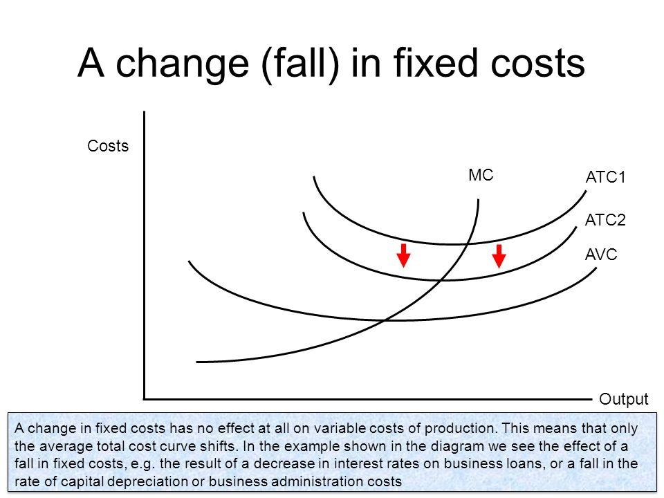
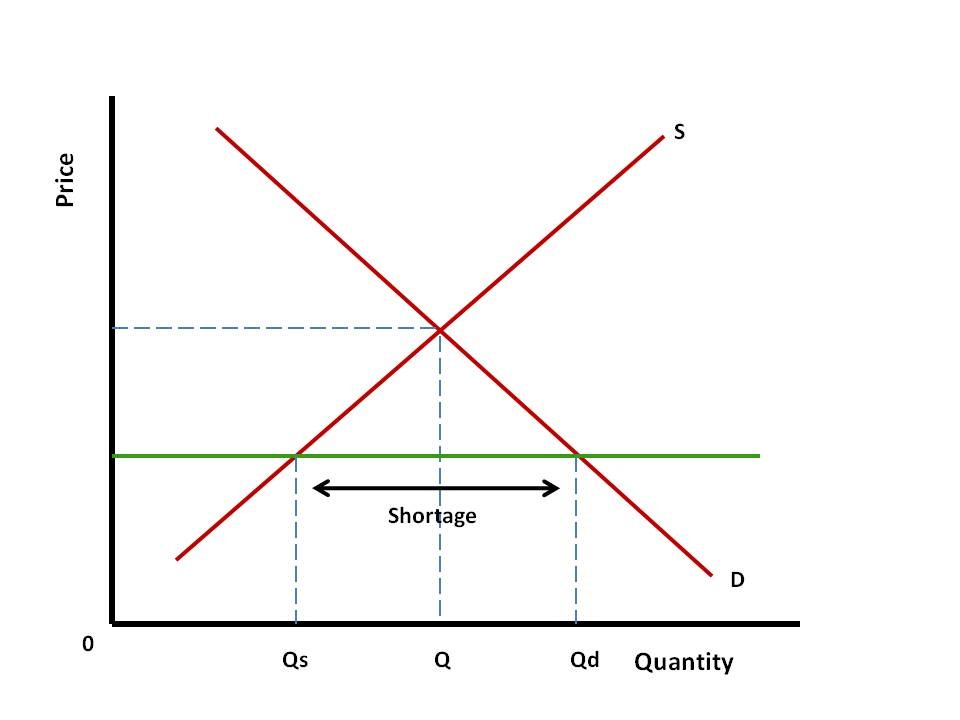
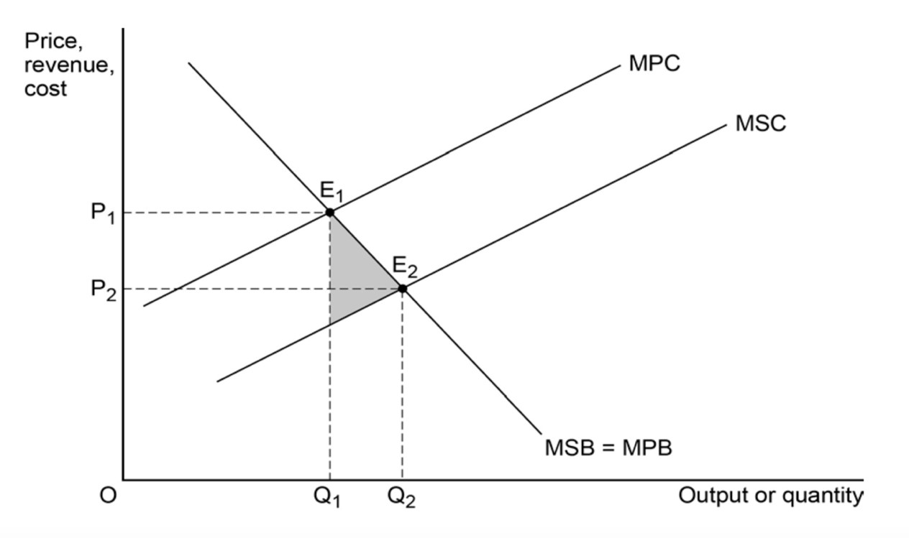

IB Docs (2) Team
IB Docs (2) Team

Annotated extended essay sample 1
Classroom activity
Read the extended essay below, which came from a former Economics student. After doing so, apply the extended essay rubric and justify your marks. My comments are on the next page as well as an annotated copy of the EE.
Title: How efficient was the solar panel energy system installed by the school?
Word count: 3673 words
Table of Contents
| Page number | |
| 2 | |
| 2 | |
| 2 | |
| 3 | |
| 11 | |
| References and Bibliography | 13 |
Introduction
The current global issue regarding energy usage is due to the fact the majority of the world is using non-renewable energy which risks the future by harming the environment. However, there has been an increase in the usage and instalment of renewable energy production methods such as solar and wind power. One of these initiatives took place through the instalment of a solar power plantation in my school, located in Istanbul. The instalment of this power plant produced costs, benefits, and externalities (effect on third parties).
To evaluate these elements, the research question ‘‘How efficient was the solar panel energy system installed by the school’’ was formed.
Hypothesis
It was hypothesised that the newly-installed solar power plantation in the school was an efficient economic decision. This proposition was based on the fact that solar power is a renewable energy resource, making it available for a long term use. Furthermore, it is more environmentally friendly which imposes positive externalities on the school population, and residents around the school’s district. A positive externality is created when either the production or consumption of the good creates benefits for society. Since the school produces solar energy, this can be considered a positive externality of production.
Method of Data Collection
In order to investigate the research question thoroughly, the data collected and the analysis were aimed to be kept strictly specific to the school’s scenario. Brief information regarding the importance of renewable energy sources, solar power particularly in this case, was given only to provide a better understanding of the context. The data regarding renewable energy sources as a percentage to non-renewable energy sources was taken from The World Bank, and the information regarding Turkey was taken from the Ministry of Energy.
On the other hand, all the information regarding the instalment of the solar power plant in the school was gathered from the school’s facilities department. However, a limitation regarding this process was that some of the information couldn’t be acquired as the school restricted the sharing of some budget details with a student. For example, the data for the school’s monthly energy consumption and production could be acquired but the economic costs of labor during the instalment of the solar power plant was not provided and the cost to instal the plant itself had to be derived. Overall, there was more than sufficient information to determine whether the decision to instal a solar power plant to the school had been an economically efficient one or not.
Data & Analysis
Renewable energies are sources of clean, inexhaustible and increasingly competitive energy. In contrast to fossil fuels, they are diverse, abundant and they possess potential for use anywhere on the planet, but more importantly they don’t produce greenhouse gases – which cause climate change – nor contribute to pollution. Due to the fact that their use is becoming more widespread, their costs are falling and at a sustainable rate. There has been a significant growth in the usage of clean energy resources, as reflected in statistics produced in 2015 by the International Energy Agency (IEA). Clean energy resources represented almost half of all new electricity generation capacity installed in 2014, when they were the second biggest source of electricity worldwide, behind coal.
According to the data collected by the International Energy Agency, world electricity demand is projected to rise by 70% by 2040 - its share of final energy use rising from 18 to 24% during the same period – fueled primarily by the emerging economies of India, China, Africa, the Middle East and South-East Asia. The development of clean energy plays a key role to combat climate change and limit its most devastating effects. Furthermore, research reveals that the transition to a renewable energy production system has several economic benefits. According to the International Renewable Energy Agency (IRENA), doubling the percentage of renewable energy usage in relation to the world’s energy consumption, to 36% by 2030, would result in additional global growth of 1.1% by that year (equivalent to 1.3 trillion dollars), an increase in social welfare of 3.7% and in employment in the sector of up to more than 24 million people, compared to 9.2 million today.
“Renewable Energy.” ACCIONA: Sustainable Infrastructure and Renewable Energy, www.acciona.com/renewable-energy/.
The increase in the usage of renewable energy sources was also the case with Turkey. The renewable energy consumption as a percentage of the total energy consumption, increased from 11.6% in 2014 to 13.4% in 2015. One of the most popular types of renewable energy production in Turkey was solar energy. According to the data shown through the Solar Energy Map (SEM) of Turkey prepared by the Renewable Energy General Directorate, it has been determined that the total annual insolation time is 2,741 hours (a total of 7,5 hours per day), and the total solar energy derived per year is 1,527 kWh/m2 per year (total 4,18 kWh/m2 per day). The total established solar collector area within the country as of 2017 was calculated as being close to 20,000,000 m2. Moreover, in 2017, close to 823,000 TEP (Tons Equivalent to Petrol) heat energy was produced using solar collectors. As of the end of June 2018, the total installed capacity of the PV solar power plant is 4,723 MW, with 4,703 MW unlicensed and 23 MW licensed. Overall, Turkey had a high solar energy potential due to its geographical location.
“Republic of Turkey Ministry of Energy and Natural Resources - Solar.” Enerji.gov.tr, www.enerji.gov.tr/en-us/pages/solar.
On the other hand, the decision to install a solar power plant in the school can be analyzed through several different viewpoints. Another alternative which was discussed was wind energy. However due to the fact that wind speeds in the area would be insufficient to produce the appropriate amount of energy, and the size of the turbines would require a larger area of land, solar power was chosen. The area which was assigned to the construction of the solar power plant didn’t have a specific purpose of use previously and mostly composed of trees. The area first had to be deforested in order to construct the power plant. Although the deforestation of the area is a type of environmental harm, since trees absorb CO2, which is a greenhouse gas that contributes to global warming, the school board decided that it would be a small price to pay when compared to the projected long term benefits of the power plant. A picture of the power plant is below (Image 1), alongside a table which specifies the technical utilities of the power plant (Table 2).
Table 2 – Technical Specifications of the solar power plant in the school
Panel Type | Monocrystalline |
Panel Brand / Country | Solar World / Germany |
Number of Panels / Panel Power per unit (… # / …Wp) | 3596 / 270 Wp |
Solar Tracker System | 3 Solar Tracker Systems |
Inverter Brand / Country | Huawei / China |
Number of inverters / inverter power per unit | 21 Units x 40 kW |
Control Systems Brand / Country | Huawei / China |
Construction Material | ST-37 (Hot Deep Galvanized Steel) |
Area Used | 18.400 m2 |
Capacity (DC - Panel Output) | 970,92 kWp (270W panels) |
Projected Annual Solar Radiation Ratio (kWh/kWp)(İstanbul) | 1330 kWh / kWp (1) |
Annual Production (kWh) *using projected value for Istanbul | 1.291.000 kWh |
Panel Performance Loss (annual %) | %2.5 for first year, 0.7% for following years |
Panel Efficiency (After 25 years) (%) | 82% |
Solar Power Plant Performance (After 25 years) (%) | 0,8 |
Solar Power Plant lifetime (years) | 40 |
Production Guarantee (kWh/year) | 1.187.000 kWh (First Year) (2) (270W panel) |
Transformer Brand | ABB |
Cell Brand | Schneider |
Transformer | 1250 kVA |
(1) The projected value for annual solar radiation is based on the average for the values of the last thirty years. Due to the fact that the values for the last couple of years are above average, taking these values into account during calculations would produce incorrect results.
(2) The production guarantee is calculated using a +/- %8 uncertainty due to meteorological reasons which would result in possible power outages.
Factors of production in Economics are defined as resources or inputs which are used to produce all goods and services that people need and want. The four factors of production are land, labor, capital and entrepreneurship. Looking at the table and image above, it can be said that all of the four factors are evident in the construction of this solar power plant. Land is used as an area of approximately 18.400 m2 is deforested and used for construction. Another factor of production, labor is used as employees took part in the construction of this facility. Capital and entrepreneurship were also used in the sense that machines, tools, equipment, all construction is considered as physical capital and the process involved human effort which is used to organize the other three factors of production (capital, land, and labor).
As it can be seen from the table, the solar power plant has a maximum durability of 40 years, and stable production rate for approximately 25 years. This aspect, was one of the main reasons behind the school board’s decision to install the power plant since the long durability would offer a sustainable way to produce energy for the future.
Below is the graph for the electricity consumption and production for the solar power plant at The Koc School regarding the year 2017. The amount of energy produced by the power plant.
![]()
In kW is shown in orange, whereas the school’s consumption is shown in yellow. As it can be seen in the graph, the consumption levels for each month is considerably higher than the production levels. Due to the fact that solar power production depends on the amount of radiation, the months with the highest levels of production are during spring and summer months. Moreover, during the months of autumn and winter, the consumption levels are considerably higher, 371.180 kW in September, 342.014 in December and 326.944 in January. These levels are higher because colder weather conditions would require the heating system at the school to consumer more energy. On the other hand, the consumption levels during the months April, and July are lowest (272.764 kW and 288.873 kW respectively) because these months include the spring break and the summer break, which would decrease the school population significantly due to the absence of the student body, which is approximately 1000. The average cost of the school’s monthly electricity usage can be calculated by obtaining the mean values for production and consumption values. The mean formula, which is stated below will used. The values for each month will be added and the sum will be divided to twelve, number of months in a year.
Mean=μ= (∑E)/12, E=amount of electricity produced or consumed within a year
Then the mean monthly value of production will be subtracted from the mean monthly value of consumption, and the result will be multiplied by the price of energy per kW to find the average monthly energy expenditure for the school. The sum of the energy consumption within a year equals to 3.838.740 kW, whereas the sum of the energy production within a year equals to 1.334.021 kW. When these two values are divided to twelve, it can be said that the monthly

energy consumption of the school is 319.895 kW. Considering the fact that the school pays about 0.133$/kW, the average total cost would have been 42.546$. However, after the instalment of the solar power plant, the school now has a monthly rate of energy production which is equal to 111.168 kW. When this value is multiplied with the price of energy per unit, which is 0.133$/kW, it can be derived that the solar power plant generates a monthly revenue of approximately 14.785$. Subtracting this value from the initial average total cost, the new average total cost for the school is 27.760$, which is a 34.75% decrease (calculations shown below.)(Monthly Consumption-Monthly Production) Cost of Energy per unit =Average Total Cost
42.546- 14.785= 27.760 $
Percentage Change= (14.785 )/42.546× 100=34.75%
This relationship is shown below in the cost diagram for the school’s energy expenses. The y-axis, labeled “Costs”, refers to the school’s energy costs and the x-axis, labeled “Output” refers to the sum of energy that the school consumes and produces. The AFC (Average Fixed Costs) curve is not shown here because fixed costs refer to costs which does not vary with output such as payment of rent or insurance. The school didn’t provide any information regarding these costs. Besides, these costs won’t have such importance in this aspect of the analysis as the change in costs which result from the production of energy (a variable output) will be analyzed. The AVC (Average Variable Costs) curve represents costs which change as the production / consumption increases. As the consumption of energy in the school increases, the average variable costs increases, whereas, as the production of energy through the solar power plant increases the average variable cost decreases. The ATC (Average Total Cost) refers to the sum of the fixed in variable costs. Although there isn’t an Average Fixed Costs curve which is represented in the diagram, it can be seen that the ATC curve is significantly greater than the AVC curve. In this case, the AVC curve will refer to the school’s monthly energy costs. As it can be seen from the calculations above, the initial Average Total Cost will be assumed as 42.546$ because it is the total equivalent for the cost of school’s monthly energy consumption.
However, after the installment of the solar power plant, it can be seen that energy worth of 14.785$ is produced monthly in average. Whether the school chooses the use the energy which was produced through the solar power plant, or simply sell it for the same per-unit price used to buy it, there would be still decreases in costs. The 34.75% percent decrease in the school’s average variable costs (average total costs in this case) is represented with a downward shift of the ATC curve in Diagram 1. This decrease is shown with the change from ATC1 to ATC2. The school told that the energy was sold to the government’s electrical network with the same per unit price of 0.133$/kW. There wasn’t any specific information regarding the specific the use of money, but it is added to the budget of the school’s foundation, Vehbi Koc Foundation, for other use such as the scholarships of students. So far, the solar power plant has shown itself to be a economically efficient since the production of energy enables the school to either cut the costs for energy consumption or simply spend the money for other purposes since foundations are legally bound to have zero profits.
Diagram 2- Supply-Demand for Koc School's Energy Production

However, if the solar power plant was the only method for school to acquire energy, it would be far from sufficient as the monthly amount of consumption is approximately three times the value of the energy produced by the power plant. This situation can be analyzed through the use of economic concepts of demand, supply, and shortage using a Supply-Demand diagram for the school’s energy production. Demand refers to the willingness and ability of consumers to purchase a given quantity of a good or service at a given point in time or over a period in time. (3)(3) “Definitions.” Transition Economies, www.economicsonline.co.uk/Definitions/Demand.html.
In this case, the demand refers to the school’s monthly energy consumption.
Whereas, supply of a good is the willingness and ability of producers to create goods and services to take them to market. (4) The energy supply of the school refers to the amount of energy which is produced by the solar power plant. The school’s energy consumption exceeds the energy production so the Quantity Demanded exceeds Quantity Supplied (Qd > Qs). This creates a shortage, obligating the school to meet its remaining portion of the energy demand through purchasing it from the government’s electrical network. The stakeholders in this situation are the government, the school, and the students. Purchasing the remaining energy demand imposes economical costs on the school, since the school would have to pay extra money. Moreover, there would be opportunity costs involved in this situation. The term opportunity cost refers to the value of the next best alternative that is sacrificed as a result of making a choice. (5)
(4) Definitions.” Transition Economies, www.economicsonline.co.uk/Definitions/Supply.html.
(5) Tragakes, Ellie. IB Economics in a Nutshell: Exam Study Guide, page 1 Noema Press, 2015.
The school could have used the money which was spent on the rest of the energy demand for other purposes, however: the scarcity of resources (energy) necessities choice which involves opportunity costs. The government, another stakeholder, is the supplier as it earns revenue by selling energy to the school. It can’t be determined whether the government is worse off because the per unit price that the government pays to import the electricity from other countries is not known. If the per unit price for electricity that is paid by the government to import is greater than 0.133$/kW, then the government is worse off since they are experiencing losses when selling it. Whereas, if the per unit price is less than 0.133$/kW, then the government is better off since they are experiencing profits for each additional unit of electrical energy sold. Finally, although they are not a part of this transaction directly, students are also affected. Due to the fact that students have the biggest population within the school, most of the energy demand is resulting from their presence. This would reflect to the school’s tuition which is paid by the students (and their families). In the end, students would be the ones who are paying most of the school’s energy expenses although they are not a part of the transaction, making them worse off. This situation can be classified as an externality as external costs are imposed on a third party (the students). Overall, the installment of the solar power plant has effects on additional third parties alongside the students. This can be analyzed through the economic concept of positive externality of production.
An externality occurs when market fails to achieve allocative efficiency because marginal social benefits (MSB) are greater/less than the marginal social costs (MSC). The reason behind this inequality is that there are effects on third parties who are not involved in the transaction. The types of externalities are first divided to two as negative and positive externalities. Negative externalities arise from the overallocation of resources, too much is produced relative to the social optimum quantity. On the other hand, positive externalities arise from the under allocation of resources in which too little is produced in relation to the

social optimum. A positive externality of production arise from the underproduction of a good/service which is beneficial for the third parties involved. Relating back to the school’s case, it can be said that solar power is beneficial for the third parties as it is a way to generate energy without harming the environment. This situation can be analyzed through the diagram to the right.Diagram 3 - Positive Externality of Production Graph
In the diagram, the Marginal Private Cost (MPC) curve is equal to the supply curve and greater than the Marginal Social Cost (MSC) curve because producers create external benefits for the society. Solar energy is produced through the new power plant in the school, and this is beneficial for the society because solar energy is a type of renewable energy and a clean technology. The usage of clean technology contributes to the environmental sustainability of the area, as it produces very little or no environmental harm in relation to energy produced through the burning of fossil fuels. This is an external benefit enjoyed by not just the parties involved in the transaction, but society as well. Moreover, there are benefits other than environmental sustainability, such as the creation of an educative example for the students. Since the non-renewable methods of energy production is not sustainable, renewable methods such as solar power gains more importance every day. In order to encourage students to choose these energy methods in the future, the school has built a classroom next to the solar power plant, which is also operated through solar power, to have classes regarding solar energy and its importance alongside other renewable energy production methods. The solar power plant in the school is also the biggest one (in terms of output) in the Marmara region and it is the first one that is built by an educational organization/facility. So the solar power plant in the school is considered to be national example for any kind of organization. However, as it was analyzed earlier, the production of the solar power plant (Q1) is not sufficient to supply the school’s demand, which is represented as Q2, the social optimum point, in the diagram. The shaded area which results from this difference represents the deadweight/welfare loss of the society. A method that can be used in order to reduce this welfare loss can be Market-Based policies such as the provision of subsidy by the government. An involvement of a subsidy would shift the supply curve (MPC) towards the MSC curve, minimizing the area between the curves, and consequently the welfare loss. The government already buys the energy produced by the school’s solar power plant but a subsidy would be a more effective way since it would decrease the school’s energy costs even further. However, there are certain drawbacks in this method of solution such as difficulty in estimating the value of external benefits and the opportunity costs involved in the usage of government’s funds.
Conclusion
The installment of the solar power plant at the school meant that new costs, benefits, and externalities should be analyzed in order to determine whether this decision was economically efficient. Data collected from international and governmental organizations showed that the usage of renewable energy was increasing both in Turkey and across the world as the rapid environmental deterioration required clean and sustainable technologies for energy production. This was the main goal behind the school’s decision and it was hypothesized that these benefits, alongside additional ones that were discussed in the essay would render the solar power plant an economically efficient decision.
However, the collected data showed that the solar power plant’s energy production constituted only about 34.75% of the school’s energy consumption demand, obligating to school to buy the remaining from the government. This led to the creation of a shortage and a positive externality of production.
On the other hand, the school was able to cut its energy costs by selling the produced energy for the same unit price which was used to buy the electrical energy initially. This enabled the school to spend the money on elsewhere such as student scholarships or other educative projects. Moreover, there were additional benefits for the society as the solar power plant enabled a way to produce energy without imposing harm to the environment.
There were some limitations in the investigation. The most recent data for energy production and consumption of the school (2018) was not available at the time of research and this restricted the data set to a maximum of a year since the power plant began production in 2017. In addition, the facilities department was restricted to share certain information such as the overall cost of the investment. Finally, since the welfare loss/gain resulting from the environmental implications of the power plant posed difficulty to calculate, it was hard to determine the extent of the market failure.
References and Bibliography
“Renewable Energy.” ACCIONA: Sustainable Infrastructure and Renewable Energy, www.acciona.com/renewable-energy/.
Congdon, William J., et al. Policy and Choice: Public Finance through the Lens of Behavioral Economics. Brookings Institution Press, 2011.
Tragakes, Ellie. Economics for the IB Diploma. W. Ross MacDonald School Resource Services Library, 2017.
Tragakes, Ellie. IB Economics in a Nutshell: Exam Study Guide. Noema Press, 2015.
“Renewable Energy Consumption (% of Total Final Energy Consumption).” | Data, data.worldbank.org/indicator/EG.FEC.RNEW.ZS?end=2015&locations=TR&name_desc=false&start=1990.
Holroyd, Stephen. IB Economics. Oxford Study Courses, 2004.
“Republic of Turkey Ministry of Energy and Natural Resources - Solar.” Enerji.gov.tr, www.enerji.gov.tr/en-us/pages/solar.
 Twitter
Twitter
 Facebook
Facebook
 LinkedIn
LinkedIn